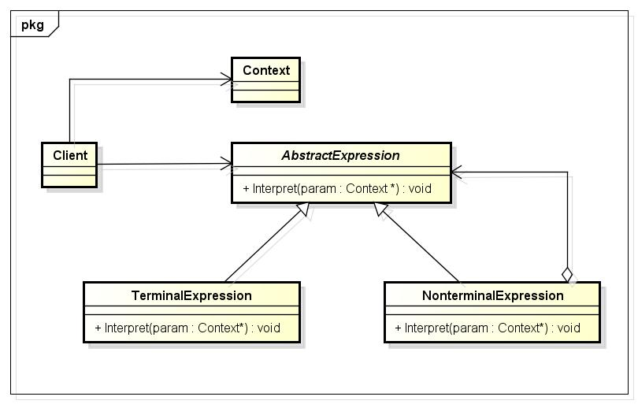

解释器模式
1 解释器模式
在GOF的《设计模式:可复用面向对象软件的基础》一书中对解释器模式是这样说的：给定一个语言，定义它的文法的一种表示，并定义一个解释器，这个解释器使用该表示来解释语言中的句子。如果一种特定类型的问题发生的频率足够高，那么可能就值得将该问题的各个实例表述为一个简单语言中的句子。这样就可以构建一个解释器，该解释器通过解释这些句子来解决该问题。
就如上面说的那个游戏，我输入up walk 5，我必须按照：移动方向+移动方式+移动距离这种格式输入我的指令，而这种格式的指令就是一种文法，只有按照了我定义的这种文法去输入，才能控制屏幕上的小狗去移动。当然了，我输入up walk 5，屏幕上的小狗肯定是听不懂的，它不知道我输入的是什么，这个时候需要怎么办？我需要一个工具去将我输入的内容翻译成小狗能听懂的东西，而这个工具就是定义中提到的解释器，解释器对我输入的指令进行解释，然后将解释得到的指令发送给屏幕上的小狗，小狗听懂了，就进行实际的移动。
我们在开发中经常用到的正则表达式也是这类问题的代表。我们有的时候需要去匹配电话号码、身份证号；我们不用为了每一种匹配都写一个特定的算法，我们可以为每一种匹配定义一种文法，然后去解释这种文法定义的句子就ok了。
2 文法规则和抽象语法树
上面对于解释器模式的定义中，提及到了一个词：文法。在使用代码实现解释器模式之前，是非常有必要去学习一下文法的概念，以及如何表示一个语言的文法规则。再拿上面的游戏这个例子进行说明，我可以定义以下五条文法：
expression ::= direction action distance | composite //表达式
composite ::= expression 'and' expression //复合表达式
direction ::= 'up' | 'down' | 'left' | 'right' //移动方向
action ::= 'move' | 'walk' //移动方式
distance ::= an integer //移动距离
上面的5条文法规则，对应5个语言单位，这些语言单位可以分为两大类：一类为终结符（也叫做终结符表达式），例如上面的direction、action和distance，它们是语言的最小组成单位，不能再进行拆分；另一类为非终结符（也叫做非终结符表达式），例如上面的expression和composite，它们都是一个完整的句子，包含一系列终结符或非终结符。
我们就是根据上面定义的一些文法可以构成更多复杂的语句，计算机程序将根据这些语句进行某种操作；而我们这里列出的文法，计算机是无法直接看懂的，所以，我们需要对我们定义的文法进行解释；就好比，我们编写的C++代码，计算机是看不懂的，我们需要进行编译一样。解释器模式，就提供一种模式去给计算机解释我们定义的文法，让计算机根据我们的文法去进行工作。
在文法规则定义中可以使用一些符号来表示不同的含义，如使用“|”表示或，使用“{”和“}”表示组合，使用“*”表示出现0次或多次等，其中使用频率最高的符号是表示“或”关系的“|”，如文法规则“bool Value ::= 0 | 1”表示终结符表达式bool Value的取值可以为0或者1。
除了使用文法规则来定义一个语言，在解释器模式中还可以通过一种称之为抽象语法树的图形方式来直观地表示语言的构成，每一棵语法树对应一个语言实例，对于上面的游戏文法规则，可以通过以下的抽象语法树来进行表示：

在抽象语法树种，可以通过终结符表达式和非终结符表达式组成复杂的语句，每个文法规则的语言实例都可以表示为一个抽象语法树，就是说每一条具体的语句都可以用类似上图所示的抽象语法树来表示，在图中终结符表达式类的实例作为树的叶子节点，而非终结符表达式类的实例作为非叶子节点。抽象语法树描述了如何构成一个复杂的句子。
3 UML类图
AbstractExpression：声明一个抽象的解释操作，这个接口被抽象语法树中所有的节点所共享；
TernimalExpression：一个句子中的每个终结符需要该类的一个实例，它实现与文法中的终结符相关联的解释操作；
NonternimalExpression：
对于文法中的每一条规则都需要一个NonternimalExpression类；
为文法中的的每个符号都维护一个AbstractExpression类型的实例变量；
为文法中的非终结符实现解释操作，在实现时，一般要递归地调用表示文法符号的那些对象的解释操作；
Context：包含解释器之外的一些全局信息；
Client：构建一个需要进行解释操作的文法句子，然后调用解释操作进行解释。
实际进行解释时，按照以下时序进行的：
Client构建一个句子，它是NonterminalExpression和TerminalExpression的实例的一个抽象语法树，然后初始化上下文并调用解释操作；
每一非终结符表达式节点定义相应子表达式的解释操作。而各终结符表达式的解释操作构成了递归的基础；
每一节点的解释操作用作用上下文来存储和访问解释器的状态。
4 使用场合
在以下情况下可以考虑使用解释器模式：
可以将一个需要解释执行的语言中的句子表示为一个抽象语法树；
一些重复出现的问题可以用一种简单的语言来进行表达；
一个语言的文法较为简单；
执行效率不是关键问题。【注：高效的解释器通常不是通过直接解释抽象语法树来实现的，而是需要将它们转换成其他形式，使用解释器模式的执行效率并不高。】
5 代码实现
将对应的控制指令翻译成汉语进行表示：
在线和vc6都运行不了，原因在于：wcscat_s、printf_s：: undeclared identifier

1 #include <iostream> 2 #include <vector> 3 using namespace std; 4 5 #define MAX_SIZE 256 6 #define SAFE_DELETE(p) if (p) { delete p; p = NULL; } 7 8 const wchar_t *const DOWN = L"down"; 9 const wchar_t *const UP = L"up"; 10 const wchar_t *const LEFT = L"left"; 11 const wchar_t *const RIGHT = L"right"; 12 13 const wchar_t *const MOVE = L"move"; 14 const wchar_t *const WALK = L"walk"; 15 16 class AbstractNode 17 { 18 public: 19 virtual wchar_t *Interpret() = 0; 20 }; 21 22 class AndNode : public AbstractNode 23 { 24 public: 25 AndNode(AbstractNode *left, AbstractNode *right) : m_pLeft(left), m_pRight(right){} 26 27 wchar_t *Interpret() 28 { 29 wchar_t *pResult = new wchar_t[MAX_SIZE]; 30 memset(pResult, 0, MAX_SIZE * sizeof(wchar_t)); 31 32 wchar_t *pLeft = m_pLeft->Interpret(); 33 wchar_t *pRight = m_pRight->Interpret(); 34 wcscat_s(pResult, MAX_SIZE, pLeft); 35 wcscat_s(pResult, MAX_SIZE, pRight); 36 37 SAFE_DELETE(pLeft); 38 SAFE_DELETE(m_pRight); 39 40 return pResult; 41 } 42 43 private: 44 AbstractNode *m_pLeft; 45 AbstractNode *m_pRight; 46 }; 47 48 class SentenceNode : public AbstractNode 49 { 50 public: 51 SentenceNode(AbstractNode *direction, AbstractNode *action, AbstractNode *distance) : 52 m_pDirection(direction), m_pAction(action), m_pDistance(distance){} 53 54 wchar_t *Interpret() 55 { 56 wchar_t *pResult = new wchar_t[MAX_SIZE]; 57 memset(pResult, 0, MAX_SIZE * sizeof(wchar_t)); 58 59 wchar_t *pDirection = m_pDirection->Interpret(); 60 wchar_t *pAction = m_pAction->Interpret(); 61 wchar_t *pDistance = m_pDistance->Interpret(); 62 wcscat_s(pResult, MAX_SIZE, pDirection); 63 wcscat_s(pResult, MAX_SIZE, pAction); 64 wcscat_s(pResult, MAX_SIZE, pDistance); 65 66 SAFE_DELETE(pDirection); 67 SAFE_DELETE(pAction); 68 SAFE_DELETE(pDistance); 69 70 return pResult; 71 } 72 73 private: 74 AbstractNode *m_pDirection; 75 AbstractNode *m_pAction; 76 AbstractNode *m_pDistance; 77 }; 78 79 class DirectionNode : public AbstractNode 80 { 81 public: 82 DirectionNode(wchar_t *direction) : m_pDirection(direction){} 83 84 wchar_t *Interpret() 85 { 86 wchar_t *pResult = new wchar_t[MAX_SIZE]; 87 memset(pResult, 0, MAX_SIZE * sizeof(wchar_t)); 88 89 if (!_wcsicmp(m_pDirection, DOWN)) 90 { 91 wcscat_s(pResult, MAX_SIZE, L"向下"); 92 } 93 else if (!_wcsicmp(m_pDirection, UP)) 94 { 95 wcscat_s(pResult, MAX_SIZE, L"向上"); 96 } 97 else if (!_wcsicmp(m_pDirection, LEFT)) 98 { 99 wcscat_s(pResult, MAX_SIZE, L"向左"); 100 } 101 else if (!_wcsicmp(m_pDirection, RIGHT)) 102 { 103 wcscat_s(pResult, MAX_SIZE, L"向右"); 104 } 105 else 106 { 107 wcscat_s(pResult, MAX_SIZE, L"无效指令"); 108 } 109 110 SAFE_DELETE(m_pDirection); 111 return pResult; 112 } 113 114 private: 115 wchar_t *m_pDirection; 116 }; 117 118 class ActionNode : public AbstractNode 119 { 120 public: 121 ActionNode(wchar_t *action) : m_pAction(action){} 122 123 wchar_t *Interpret() 124 { 125 wchar_t *pResult = new wchar_t[MAX_SIZE]; 126 memset(pResult, 0, MAX_SIZE * sizeof(wchar_t)); 127 128 if (!_wcsicmp(m_pAction, MOVE)) 129 { 130 wcscat_s(pResult, MAX_SIZE, L"移动"); 131 } 132 else if (!_wcsicmp(m_pAction, WALK)) 133 { 134 wcscat_s(pResult, MAX_SIZE, L"走动"); 135 } 136 else 137 { 138 wcscat_s(pResult, MAX_SIZE, L"无效指令"); 139 } 140 141 SAFE_DELETE(m_pAction); 142 return pResult; 143 } 144 145 private: 146 wchar_t *m_pAction; 147 }; 148 149 class DistanceNode : public AbstractNode 150 { 151 public: 152 DistanceNode(wchar_t *distance) : m_pDistance(distance){} 153 154 wchar_t *Interpret() 155 { 156 wchar_t *pResult = new wchar_t[MAX_SIZE]; 157 memset(pResult, 0, MAX_SIZE * sizeof(wchar_t)); 158 159 wcscat_s(pResult, MAX_SIZE, m_pDistance); 160 161 SAFE_DELETE(m_pDistance); 162 return pResult; 163 } 164 165 private: 166 wchar_t *m_pDistance; 167 }; 168 169 class InstructionHandler 170 { 171 public: 172 InstructionHandler(wchar_t *instruction) : m_pInstruction(instruction), m_pTree(NULL){} 173 174 void Handle(); 175 void Output(); 176 177 private: 178 void SplitInstruction(wchar_t **&instruction, int &size); 179 180 wchar_t *m_pInstruction; 181 AbstractNode *m_pTree; 182 }; 183 184 void InstructionHandler::Handle() 185 { 186 AbstractNode *pLeft = NULL; 187 AbstractNode *pRight = NULL; 188 AbstractNode *pDirection = NULL; 189 AbstractNode *pAction = NULL; 190 AbstractNode *pDistance = NULL; 191 192 vector<AbstractNode *> node; // Store the instruction expression 193 194 // Split the instruction by " " 195 wchar_t **InstructionArray = NULL; 196 int size; 197 SplitInstruction(InstructionArray, size); 198 for (int i = 0; i < size; ++i) 199 { 200 if (!_wcsicmp(InstructionArray[i], L"and")) // The instruction is composited by two expressions 201 { 202 wchar_t *pDirectionStr = InstructionArray[++i]; 203 pDirection = new DirectionNode(pDirectionStr); 204 205 wchar_t *pActionStr = InstructionArray[++i]; 206 pAction = new ActionNode(pActionStr); 207 208 wchar_t *pDistanceStr = InstructionArray[++i]; 209 pDistance = new DistanceNode(pDistanceStr); 210 211 pRight = new SentenceNode(pDirection, pAction, pDistance); 212 node.push_back(new AndNode(pLeft, pRight)); 213 } 214 else 215 { 216 wchar_t *pDirectionStr = InstructionArray[i]; 217 pDirection = new DirectionNode(pDirectionStr); 218 219 wchar_t *pActionStr = InstructionArray[++i]; 220 pAction = new ActionNode(pActionStr); 221 222 wchar_t *pDistanceStr = InstructionArray[++i]; 223 pDistance = new DistanceNode(pDistanceStr); 224 225 pLeft = new SentenceNode(pDirection, pAction, pDistance); 226 node.push_back(pLeft); 227 } 228 } 229 230 m_pTree = node[node.size() - 1]; 231 } 232 233 void InstructionHandler::Output() 234 { 235 wchar_t *pResult = m_pTree->Interpret(); 236 237 setlocale(LC_ALL,""); 238 wprintf_s(L"%s\n", pResult); 239 240 SAFE_DELETE(pResult); 241 } 242 243 void InstructionHandler::SplitInstruction(wchar_t **&instruction, int &size) 244 { 245 instruction = new wchar_t*[10]; 246 memset(instruction, 0, 10 * sizeof( wchar_t*)); 247 248 for (int i = 0; i < 10; ++i) 249 { 250 instruction[i] = new wchar_t[10]; 251 memset(instruction[i], 0, 10 * sizeof(wchar_t)); 252 } 253 254 size = 0; 255 int n = 0; 256 while (*m_pInstruction != L'\0') 257 { 258 if (*m_pInstruction == L' ') 259 { 260 size++; 261 m_pInstruction++; 262 n = 0; 263 continue; 264 } 265 266 instruction[size][n++] = *m_pInstruction++; 267 } 268 size++; 269 } 270 271 int main() 272 { 273 wchar_t *pInstructionStr = L"up move 5 and down walk 10"; 274 275 InstructionHandler *pInstructionHandler = new InstructionHandler(pInstructionStr); 276 pInstructionHandler->Handle(); 277 pInstructionHandler->Output(); 278 279 SAFE_DELETE(pInstructionHandler); 280 }
我们这里用代码来实现上面的游戏，只不过不是控制小狗在屏幕上移动了，而是将对应的控制指令翻译成汉语进行表示，这和翻译成控制小狗移动的指令的原理是一样的。比如现在有指令：down run 10；那么，经过解释器模式得到的结果为：向下跑动10。
在上面的代码中，我没有用到Context类，一般Context类作为环境上下文类，用于存储解释器之外的一些全局信息，它通常作为参数被传递到所有表达式的解释方法interpret中，可以在Context对象中存储和访问表达式解释器的状态，向表达式解释器提供一些全局的、公共的数据，此外还可以在Context中增加一些所有表达式解释器都共有的功能，减轻解释器的职责。而我们在代码中定义的一些常量，完全可以放入到Context类中，作为上下文的全局数据。
6 主要优点
易于改变和扩展文法。由于在解释器模式中使用类来表示语言的文法规则，因此可以通过继承等机制来改变或扩展文法；
每一条文法规则都可以表示为一个类，因此可以方便地实现一个简单的语言；
实现文法较为容易；在抽象语法树中每一个表达式节点类的实现方式都是相似的，这些类的代码编写都不会特别复杂；
增加新的解释表达式较为方便。如果用户需要增加新的解释表达式只需要对应增加一个新的终结符表达式类或非终结符表达式类，原有表达式类代码无须修改，符合“开闭原则”。
6 主要缺点
对于复杂文法难以维护；在解释器模式中，每一条规则至少需要定义一个类，因此如果一个语言包含太多文法规则，类的个数将会急剧增加，导致系统难以管理和维护，此时可以考虑使用语法分析程序等方式来取代解释器模式；
执行效率低；由于在解释器模式中使用了大量的循环和递归调用，因此在解释较为复杂的句子时其速度很慢，而且代码的调试过程也很麻烦。
7 总结
解释器模式在实际的系统开发中使用的非常少，因为它会引起效率、性能以及维护方面的问题，并且难度较大，一般在一些大中型的框架型项目中能够找到它的身影。而现在又有很多的开源库提供了对实际需要的支持，所以，我们在实际开发中没有必要再去重复造轮子，能够理解了解释器模式就好了。
本页共56段，3676个字符，8952 Byte(字节)